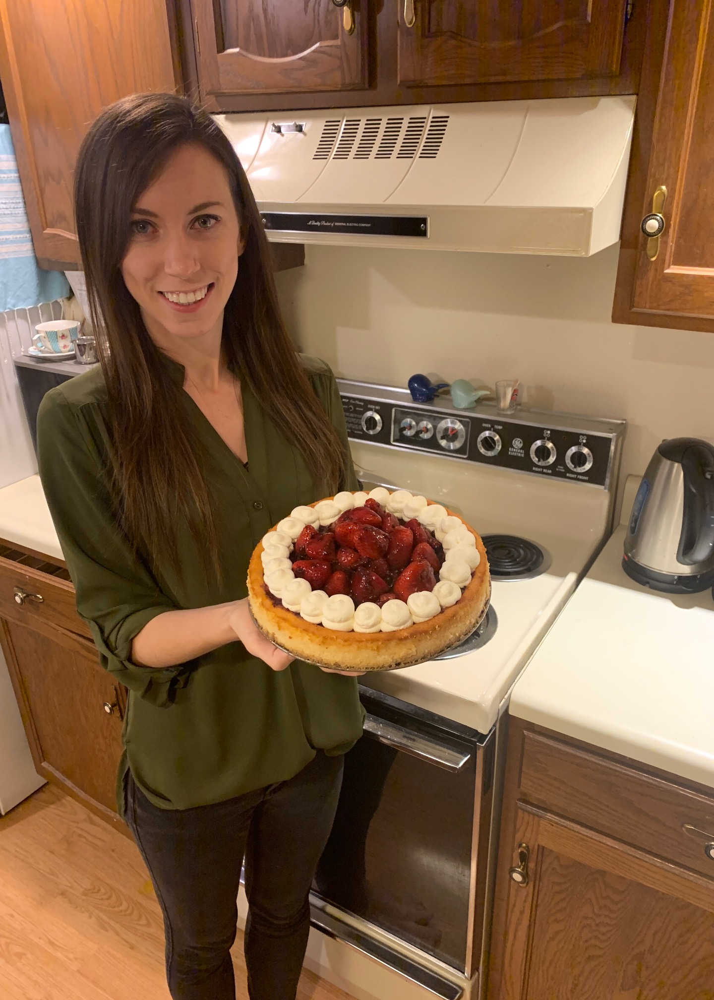

Mississippi Mud Pie
Mississippi Mud PieSeptember 29, 2019
Continental Cheesecake
October 18, 2019
Melting Moments
October 6, 2019
Mississippi Mud Pie
September 29, 2019
Lemon Drizzle Traybake (with poppy seed)
September 24, 2019
Austrian Curd Cheesecake
September 15, 2019
Glazed Fruit Tartlets
September 9, 2019
Devil's Food Cake
August 18, 2019
English Muffins
July 28, 2019
Banoffi Pie
July 22, 2019
 Carrot Cake
Carrot Cake
July 14, 2019
Chocolate Chip Cookies
July 11, 2019
Swiss Wild Strawberry and Walnut Cake
July 2, 2019
Chocolate Swiss Roll
June 11, 2019
Very Best Shortbread
May 29, 2019
Lemon Griestorte
May 12, 2019
Cappuccino Cake
May 5, 2019
Banana Loaf
April 28, 2019
Pecan Pie
April 27, 2019
Easter Simnel Cake
April 20, 2019
Viennese Fingers
April 4, 2019
Classic Apple Pie
April 4, 2019
French Madeleines
March 25, 2019
 Macaroons
Macaroons
March 21, 2019
Yorkshire Gingernuts
March 14, 2019
 Fairy Cakes
Fairy Cakes
February 13, 2019
Baked Apple Lemon Sponge
February 3, 2019
Special Fruit Scones
January 26, 2019
American Chocolate Ripple Cheesecake
January 21, 2019
Banana and Honey Teabread
January 14, 2019
Chocolate Chip American Muffins
January 11, 2019
Marmalade Cake
January 2, 2019
New Year Tipsy Cake
December 31, 2018
Florentines
December 28, 2018
Frosted Walnut Layer Cake
December 25, 2018
Brandy Snaps
December 20, 2018
Very Best Chocolate Fudge Cake
December 16, 2018
Lemon Yoghurt Cake
December 8, 2018
Gingerbread Traybake
December 1, 2018
Tarte Tatin
November 24, 2018
Strawberry Pavlova
November 21, 2018
Crunchy Orange Syrup Loaves
November 19, 2018
Cheese Scone Round
November 18, 2018
Chocolate and Vanilla Pinwheel Biscuits
November 11, 2018
Very Best Scones
November 10, 2018
Iced Orange Fairy Cakes
November 4, 2018
Apple and Cinnamon Cake
October 28, 2018
(cake fell apart)
Divine Chocolate Birthday Cake
October 24, 2018
Double Chocolate Cookies
October 14, 2018
Millionaries' Shortbread
October 7, 2018
Arlettes
September 30, 2018
(Paul Hollywood Recipe)
Large all in one Victoria Sandwich
August 26, 2018